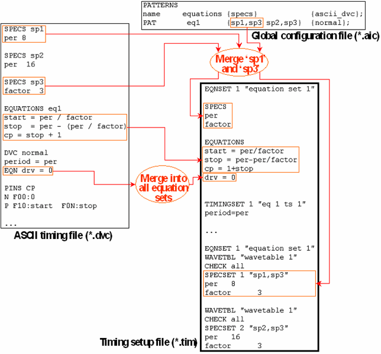

EQUATIONS Blocks, SPECS Blocks, and Equation Variables
The EQUATIONS and SPECS blocks serve to define the equation sets and specsets of equation based timing. The syntax is the same as in the timing setup file. The ASCII timing file can contain several EQUATIONS and several SPECS blocks which can be combined for the timing of one pattern (see The Input Columns), provided that they are compatible, that is, there are no different definitions of the same variable. You can also define several specsets for one pattern. Note that a variable can only be used after it has been defined. Therefore, the SPECS blocks should be placed at the beginning of the ASCII timing file.
You can also define equation variables anywhere in the ASCII timing file with the EQN and EQNS statements. The EQN statement defines a global equation variable which is merged into all equation sets that are generated in the timing setup. Therefore, such a global equation variable must not be defined in any EQUATIONS block. Since at least one equation set is always created, it is theoretically possible to do without EQUATIONS blocks altogether and use only EQN statements as long as only one equation set is needed. The format of the EQN statement is as follows:
DVC <equation_variable>=<expression>
The syntax of <expression> is the same as in the timing setup file.
The EQNS statement defines an equation variable which is associated with an EQUATIONS block. Its format is:
DVC <equations_block_name> <equation_variable>=<expression>
The syntax of <expression> is the same as in the timing setup file.
The following figure shows how equation sets and specsets are created from EQUATIONS blocks, SPECS blocks, and equation variables:
